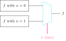

), and the select transform computes and
), and the select transform computes and  in advance and lets choose between them with a multiplexer; carry-skip and carry-select adders are the arithmetic instances.
in advance and lets choose between them with a multiplexer; carry-skip and carry-select adders are the arithmetic instances.Construction
Let arrive late and  depend on it through a long path.
depend on it through a long path.
- Generalized select (Shannon): . Compute both cofactors from the early inputs, then a multiplexer driven by . The delay from to becomes one mux; area roughly doubles for the cone.
- Generalized bypass: when propagates to an intermediate node
 and then along a chain to , add a path from straight to the end, enabled by the Boolean difference (computed from early signals): the long path is used only when the bypass is not, which makes it false for timing.
and then along a chain to , add a path from straight to the end, enabled by the Boolean difference (computed from early signals): the long path is used only when the bypass is not, which makes it false for timing.
Carry instances
For a block of  bits of an adder with carry-in , propagate , generate :
bits of an adder with carry-in , propagate , generate :
- carry-skip: if the block propagates, ; a mux selects or the ripple carry. Ripple through the block happens only when , where the carry does not depend on .
- carry-select: compute the block sum for and in parallel; selects. Delay with blocks of growing size.
Picture

is computed for  and
and  in parallel and the late-arriving only drives the final multiplexer.
in parallel and the late-arriving only drives the final multiplexer.The late signal only drives the final multiplexer.
Intuition
If you have to wait for a decision, prepare all the answers and pick one when the decision arrives.
Pitfall
Speculation costs area and power — both cofactors switch all the time — so it is applied only to the critical inputs.